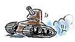
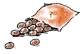
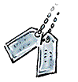
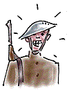

Words of War
When the U.S. entered World War One in 1918 many Americans believed it would be the “war to end all wars.” The Great War (as American veterans called it), of course, did not end war. But it did introduce many new words. Here are 4 words that entered the American vocabulary or were altered in meaning during World War One. Guess the derivation of the words’ meaning from the choices provided.
|
A tank, which was used by the British for the first time at the Battle of
Flers-Courcelette on September 15, 1916, got its name: |

|
|
A. | From the name of its inventor, Sir Thomas Tank |
| B. | Because workers who assembled the first one in
secret were told they
were working on a new kind of portable water tank
| |
C. | Because no one could pronounce the name of the Polish-born
industrialist
who promoted the idea, Thaddeus Tankowicz | |
D. | The British design team was fond of downing tankards of
ale |
|
|
KP, the term for doing kitchen chores and cleanup, originated: |
|
A. |
As an abbreviation for the army’s "kitchen police" |
| B. |
As an abbreviation for the admonition to "keep peeling" |
| C. |
As an abbreviation for "kraut prisoners" - German POWs who were often assigned such work |
| D. |
From the initials of Karl Parsons, the American army colonel who supervised
all cooking operations for the military | |

|
|
A dog tag, a metal identification badge worn around the neck to distinguish
someone in case of injury or death, was called this because: |
 |
|
A. | It was first used in the Civil War on army dogs |
| B. | It resembled the license tag on a dog’s
collar
| |
C. | Balto, the husky who carried a diphtheria antitoxin to Nome
in a
blizzard, wore a similar tag | |
D. | None of the above. |
|
|
Doughboy, as a term for American soldiers, was first used during the Civil
War, but it came into wide use during World War I. It came from: |
|
A. | A small, globular, fried biscuit served to sailors that was
similar to
the buttons on Civil War uniforms |
| B. | The practice of U.S. infantrymen of
cleaning their white belts with pipe
clay, or "dough"
| |
C. | The word adobe, which was used in the Southwest to refer to
soldiers who
were quartered in adobe buildings | |
D. | All of the above
| |

|
|
Solution to this Puzzle